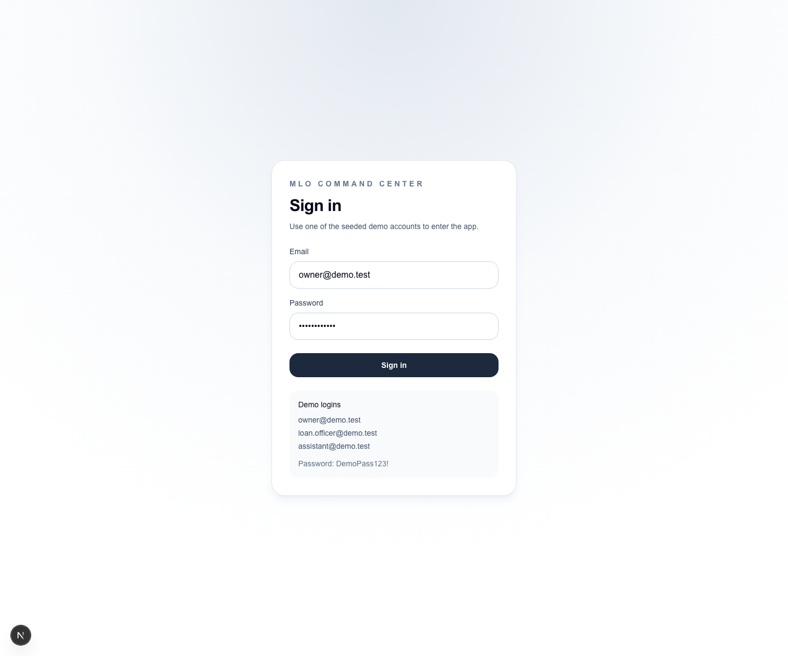

Work Queue
Lead Workspace

Codex Summary
# Codex Summary No Codex summary has been added for this run.
Manifest
{
"projectName": "MLO Command Center",
"timestamp": "2026-06-26T14-32-08-061Z",
"runName": "2026-06-26T14-32-08-061Z-mlo-command-center",
"appRoot": "/Users/danielbrooks/Projects/mlo-command-center",
"appUrl": "http://localhost:3000",
"branch": "main",
"gitSha": "c813cab",
"gitStatus": "M src/app/(app)/layout.tsx\n M src/app/(app)/settings/workbench-priorities/page.tsx\n M src/app/(app)/work-queue/page.tsx\n M src/app/(app)/workbench/page.tsx\n M src/components/app-shell/app-sidebar.tsx\n M src/components/settings/workbench-priorities-manager.tsx\n M src/components/workbench/lead-workbench.tsx\n?? .review/",
"artifacts": [
{
"name": "Work Queue",
"path": "/work-queue",
"slug": "work-queue",
"png": "work-queue.png",
"pdf": "work-queue.pdf"
},
{
"name": "Lead Workspace",
"path": "/workbench?queue=priority-work-queue",
"slug": "lead-workspace",
"png": "lead-workspace.png",
"pdf": "lead-workspace.pdf"
}
],
"publicUrl": "https://danieldbrooks.github.io/ai-reviews/latest/",
"historyUrl": "https://danieldbrooks.github.io/ai-reviews/history/2026-06-26T14-32-08-061Z-mlo-command-center/",
"server": "reused existing server"
}